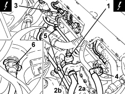
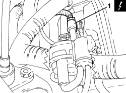
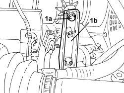
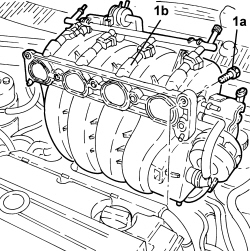
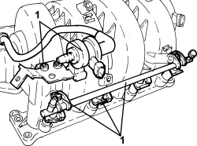

1072D10 MODULAR INLET MANIFOLD - R.R.
- Path
- Procedures > 10 ENGINE > 1072 INLET AND EXHAUST MANIFOLDS > 1072D MODULAR INLET MANIFOLD (V.I.S.) > 1072D10 MODULAR INLET MANIFOLD - R.R.
- Kind
- repair procedure (removal / refitting; the operation number is the code)
- Applies to
- engines: 1.8; all production periods
- Interactive page
- https://sloeber94.github.io/elrnDB-fCrm/en/#/194003032
Applies to: engines: 1.8; all production periods
 Removing
Removing
 Refitting
Refitting- Position the vehicle on a lift.
Op. 1056B82 INJECTION/IGNITION SYSTEM E.C.U. (ONE) - R + R
Op. 1056B17 THROTTLE BODY INTERGRAL WITH DVL - R R
1. Disconnect the electrical connection for the fuel vapour recovery solenoid valve.
Description | Connector | |
|---|---|---|
1 | Fuel vapour recovery solenoid valve |
2. Loosen the band and disconnect the fuel vapour pipe (2a) from the fuel vapour enablement solenoid valve (2b).
3. Disconnect the electrical connections for the injectors.
Description | Connector | |
|---|---|---|
3 | Injector |
4. Disconnect the rapid connector for the fuel supply pipe from the fuel manifold pipe.
5. Disconnect the throttle body engine coolant supply and return pipes from the retaining clips and move them to one side.
6. Disconnect the rapid connector for the brake servo vacuum pipe from the modular intake manifold.

Applies to: engines: 1.8; all production periods
1. Disconnect the electrical connection for the modular intake manifold control actuator.
Description | Connector | |
|---|---|---|
1 | Variable geometry solenoid valve |

Applies to: engines: 1.8; all production periods
1. Undo the bolt (1a) for the modular intake manifold mounting bracket (1b).

Applies to: engines: 1.8; all production periods
1. Undo the bolts (1a) and remove the modular intake manifold assembly (1b).

Applies to: engines: 1.8; all production periods
1. If necessary, remove the fuel manifold pipe, the injectors and the fuel vapour solenoid valve.

Applies to: engines: 1.8; all production periods
Refitting
Removing- Place the modular intake manifold in its housing and secure it tightening the bolts to the recommended torque.
Component | Fastening | dia | Value (daNm) | Validity |
|---|---|---|---|---|
Modular intake manifold | Bolt | - | 2.0 | 1.8 |
- Tighten the bolt for the modular intake manifold mounting bracket.
- Connect the electrical connection for the modular intake manifold control actuator.
- Connect the rapid connector for the brake servo vacuum pipe to the modular intake manifold.
- Place the throttle body engine coolant supply and return pipes in their housings and connect them using the clips.
- Connect the rapid connector for the fuel supply pipe to the fuel manifold pipe.
- Connect the electrical connections for the injectors.
- Connect the fuel vapour pipe to the fuel vapour enablement solenoid valve and secure the band.
- Connect the electrical connection for the fuel vapour recovery solenoid valve.
Op. 1056B17 THROTTLE BODY INTERGRAL WITH DVL - R R
Op. 1056B82 INJECTION/IGNITION SYSTEM E.C.U. (ONE) - R + R
- Remove the vehicle from the lift.